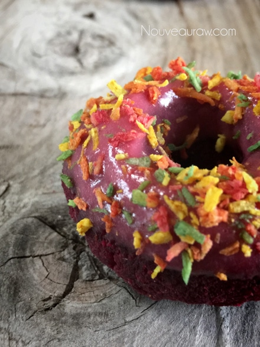

Red Velvet Donuts
~ raw, vegan, gluten-free ~
If you are a fan of my Raw Red Velvet Cake, then you will also be a fan of these donuts. I took the same batter and transformed it into sweet little donuts that are guaranteed to put a smile on anyone’s face.
I love to take one recipe and revolutionize it. Dips become sauces and sauces become dressings… Cake becomes donuts and donuts become food in my belly! Learning how to do this will save time and money. It will also help to develop your culinary skills as you become more and more creative every time you open the fridge or pantry doors.
Almond pulp…
Every batch of pulp will differ in moisture. This depends on how much of the milk you are able to squeeze from the nut bag. Therefore, you may need to adjust the amount of liquids being used in pulp recipes (like this one). If it is really dry feeling, more moisture may need to be added. Or if the pulp is really wet, less moisture would probably be necessary.
It is also best to make sure that the pulp is unflavored and that is a step that has to be taken when creating almond milk. There is a link below that you can click on to learn more about this process if you are unfamiliar with it. BUT should your pulp already have small hints of sweetness to it, not to worry… I doubt it would be enough to effect the outcome of these cupcakes. I don’t recommend any substitutions for the almond pulp. It is the key ingredient that helped me to create a light and airy cake texture.
Red Velvet Beets…
Another key component to these cupcakes is the beets. I used whole, pureed beets rather than just the juice and for a good reason. I tend to find that if I use just beet juice in cheesecake or cake, it causes the color to be “pretty in pink.” Nothing wrong with that if you want the dessert to be pink. But for red velvet cupcakes, I needed a RED color, and that prompted me to use the whole beet. Now, I know what you are thinking, use red food dye…. not on my watch. For the standard, baked Red Velvet Cake… bakers use one full bottle of #40 red food coloring! Want to read some stuff that will cause you to toss your food colorings? Google some more if you wish to educate yourself more on the matter. Yes, there are some “natural” dye colors on the store shelves, but I don’t have much luck with those when I want a really strong color.
Sweet Baby Beets…
I know what you are thinking… “Amie Sue I REALLY dislike beets!” I know I know… but I am going to ask you to put a little faith in me and just give this recipe a try. Why do I feel so confident? Because I am married to a man who when asked what foods he doesn’t like… He always says “BEETS” with the most wrinkled up, disgusted look on his face. Not only does the tone of his voice tell-all, but you can also tell just by the way he holds his body when he even just thinks about them. All this to say… that he enjoyed every bite of donut that passed between his lips. Tip of the day… look for small beets, don’t use large woody ones. The small ones are sweeter in taste, and we need all the help we can get to avoid the beet flavor from shining through.
Raw Cacao Butter
This is always an interesting ingredient for me to work with. The best way to melt raw cacao butter is to grate it into uniform-sized pieces. This speeds up the melting process and helps it to melt at the same time. The part that makes it interesting to me is the fact that I have a lot of electricity in my body and it always causes the tiny flakes of cacao to literally jump out of the measuring cup and onto everything within the surrounding area. Even worse than even packing peanuts, lol I tried to take a picture of the process for you but I will be darned if the stuff didn’t jump from the bowl onto my iPhone. Seriously! The stuff downright entertains me when I “cook” with it.
I don’t recommend skipping this ingredient either. It helps with the chocolate flavor (without affecting the color) and with the texture since it firms up a bit when chilled.
Yields 26 donuts (1/4 cup each)
Cupcakes:
- 2 cups (280 g) raw red beet, pureed
- 2 cups packed (472 g) Medjool dates, pitted
- 1/4 cup + 2 Tbsp raw agave
- 3 Tbsp (40 g) raw cacao butter, melted
- 2 Tbsp fresh lemon juice
- 1 Tbsp pure vanilla extract
- 1/4 cup raw cacao powder
- 1/2 tsp Himalayan pink salt
- 4 cups moist, packed almond pulp
Decoration:
Preparation:
- Beets: Wash, dry, and peel the beets. I used a potato peeler to easily remove the skins. Cut the ends off and rough chop 2 cups worth.
- Place the beets in the food processor, fitted with the “S” blade, and process until they are fully broken down to a small crumble.
- Add the agave. Open the lid of the food processor and scrape down the sides, then place the dates around the perimeter of the bowl.
- If the dates are really dry, I recommend warming them up by placing them in the dehydrator at 145 degrees for roughly 15 minutes.
- I normally recommend re-hydrating them in water, but I don’t want the excess water to affect the texture of the cake.
- Add the melted cacao butter, lemon juice, and vanilla. Process to a paste-like texture.
- To melt the cacao butter, grate the pieces into a bowl that can be placed in the dehydrator so it can melt.
- By grating the butter, it will melt quicker because it is all the same size.
- Add the cacao powder and salt. Process to a paste-like texture then transfer the batter to a large bowl.
- Add the almond pulp and mix well with your hands.
- I recommend gloves if you have them, so the beets don’t stain your hands. :)
- Using your hands is the best way to ensure that everything gets well mixed!
- I don’t recommend any substitutions for the pulp… it is what helps to make this cake as amazing as it is.
- To create doughnut shapes I used 1/4 cup of “dough” per doughnut.
- Roll it into a ball, then slightly flatten it.
- I then used an apple corer to press down into the middle. This removed the center dough beautifully!
- I dipped the apple corer in a glass of water in between doughnuts so it would glide in and out easily.
- Place the donuts on the mesh sheet that comes with the dehydrator and dehydrate at 115 degrees (F) anywhere between 2-6 hours.
- When making these for the first time, I recommend testing the moistness of the doughnuts throughout the dry time. Once it hits the sweet spot of your liking, make a note for the future. I like my doughnuts after about 2-3 hours, still dampish, moist but dry on the outside.
- Once cooled, decorate, and enjoy.
- Store in a sealed container in the fridge to extend shelf life.
- DOH! NUTS! I almost forgot to share that these go wonderfully with coffee, a glass of cold nut milk, or if you are feeling particularly decadent, a mug of hot cocoa!
The Institute of Culinary Ingredients™
- Is agave a good choice? Click (here).
- What is raw cacao powder?
- What is raw cacao butter and how do I prepare it for a recipe? Click (here) and I will share what I know.
- What is Himalayan pink salt and does it really matter? Click (here) to read more about it.
- Dates are an amazing ingredient for raw food recipes, click (here) to read why.
- Click (here) to learn how to grate and melt the cacao butter.

© AmieSue.com